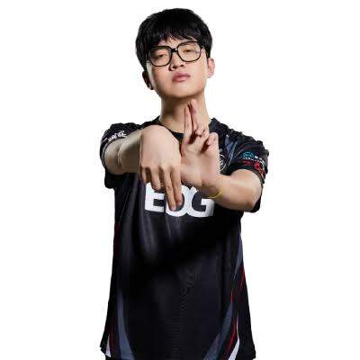

生日及星座:4/10牡羊座
畢業學校:立新國中
個人特色亮點:人是活的
期待:死了
生日及星座:4/10牡羊座
畢業學校:立新國中
個人特色亮點:人是活的
期待:死了
我是一個個性開朗、認真負責，也願意主動學習的人。平時的我喜歡與人交流，也樂於接觸不同的事物，遇到不熟悉的事情時，我會先嘗試了解，再一步一步找出適合自己的方法。我的個性比較細心，做事情時習慣先規劃，再按照順序完成，因此在面對課業或其他任務時，我會盡力把每件事情做好。雖然我不是一開始就能把所有事情做到完美的人，但我相信只要願意花時間學習、從錯誤中修正，就能慢慢進步。對我來說，學習不只是取得好的成績，更重要的是培養解決問題的能力，以及面對困難時不輕易放棄的態度。
在學校生活中，我除了重視自己的課業，也很珍惜與同學相處和合作的機會。透過團體活動與分組合作，我了解到每個人的想法和做事方式都不一樣，因此學會傾聽別人的意見，並在意見不同時嘗試溝通與協調。我也發現，團隊要順利完成一件事情，不只是依靠一個人的能力，而是需要每個人負起自己的責任。這些經驗讓我更加了解合作的重要性，也讓我逐漸培養出責任感與耐心。當遇到挫折或事情沒有按照預期進行時，我會提醒自己不要急著否定自己，而是找出問題所在，思考下一步可以怎麼改進。
未來的我，希望能繼續保持積極學習的態度，勇於嘗試新的事物，並在每一次經驗中認識自己、累積能力。我知道自己的優點還需要持續發揮，而不足的地方也需要花時間改進，因此我會給自己設定目標，並一步一步朝目標努力。我希望未來不論是在學習、工作或與人相處上，都能成為一個值得信賴、有責任感的人。對我而言，成長並不是一定要比別人優秀，而是今天的自己能比昨天更進步。只要保持努力、勇於面對挑戰，我相信每一段經歷都會成為讓自己變得更加成熟的重要養分。
